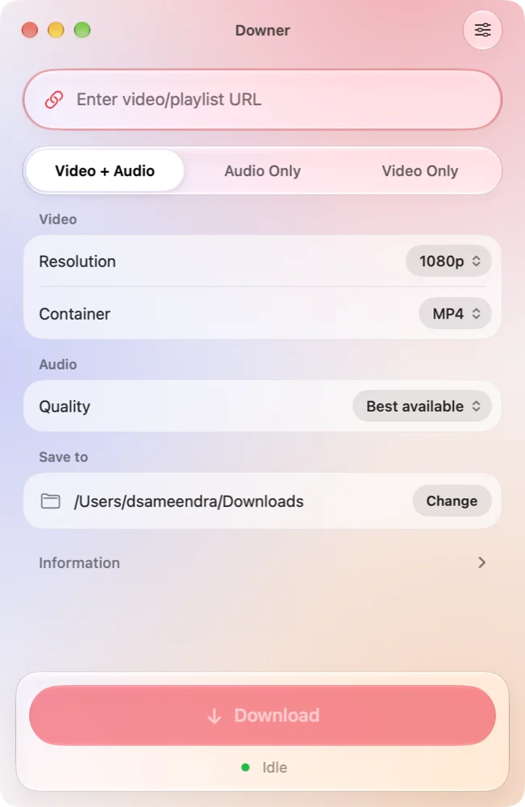
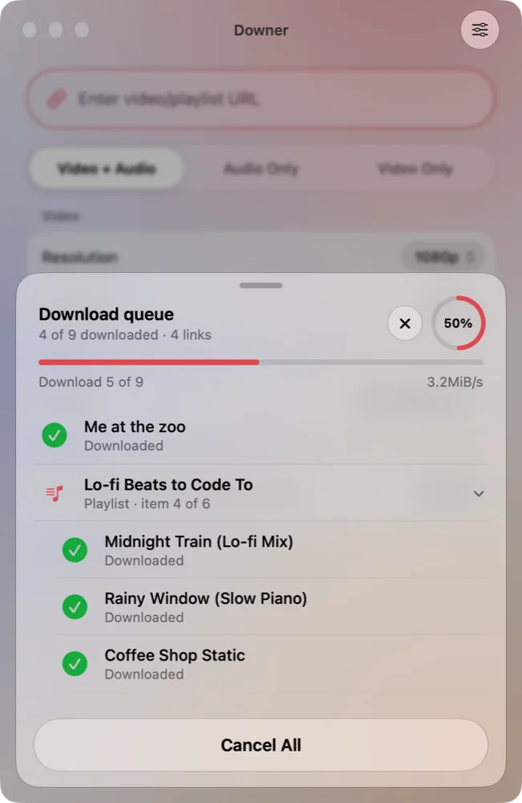
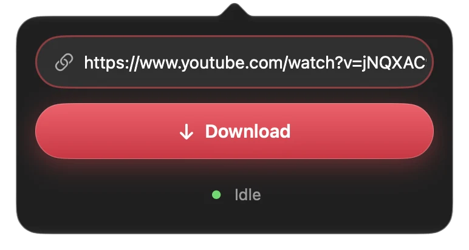
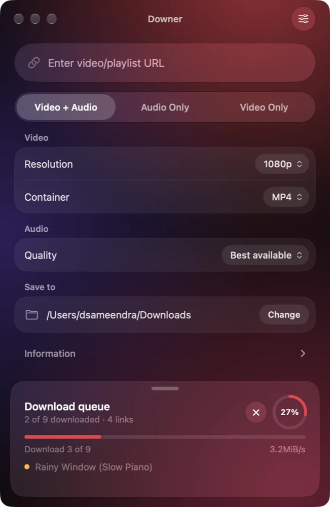
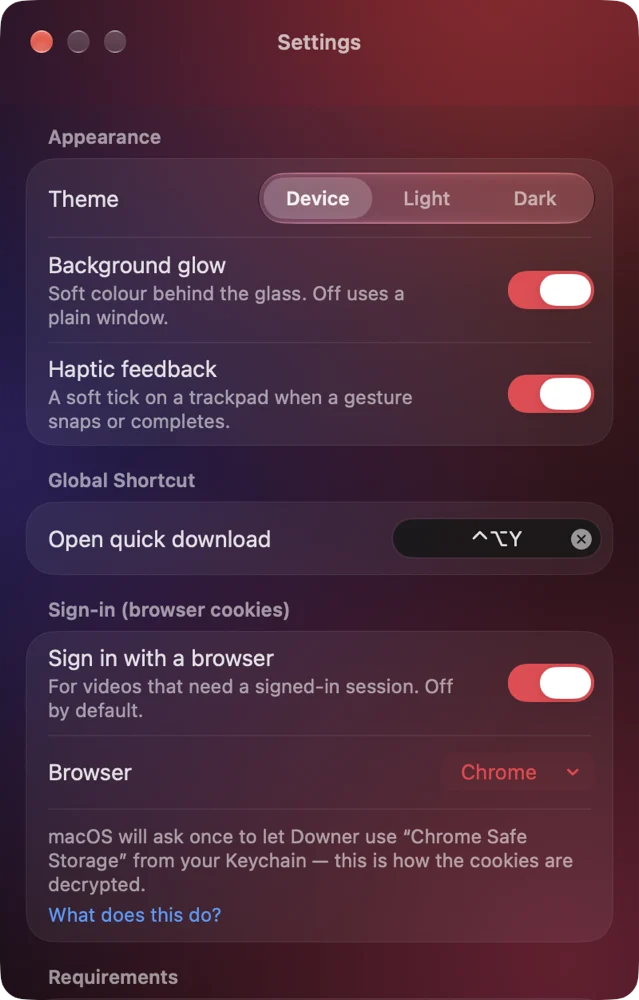

Video, audio or both
Video + audio, audio only or video only. Resolution from 240p to 8K, MP4, MKV, WebM or MOV, and audio kept as the source or converted to MP3, AAC or Opus.
Paste a link, add as many more as you like, and let Downer work through them in order. No terminal, no browser extension.
macOS 14+ · Liquid Glass on macOS 26 · Free and open source



Features
Video + audio, audio only or video only. Resolution from 240p to 8K, MP4, MKV, WebM or MOV, and audio kept as the source or converted to MP3, AAC or Opus.
Paste another link whenever you like. Links run one at a time, in order, and each keeps the settings it was added with. Drag to reorder, swipe a row to cancel or retry.
One row per video, with retry for the ones that failed. A whole playlist is saved in a folder named after it, so it is easy to find later.
A link to a video inside a playlist or Mix asks what you meant before anything downloads. Mixes and very large playlists are never downloaded whole without asking.
Copy a link anywhere, press your shortcut, and the popover opens with the link filled in. Press Return and you are done.
Best Compatibility makes H.264 + AAC MP4s that open in QuickTime, on iPhones and on TVs, instead of files that play sound with no picture.
Cancel a download and its unfinished files are removed from your folder. Videos that already finished stay, and a failed download keeps its pieces so Retry can carry on.
Install and update yt-dlp, ffmpeg and deno from Settings. Downer updates itself, signed and verified, and waits for running downloads to finish first.
Off by default, with a consent screen first. Downer tries without cookies and uses your browser's sign-in only when a site says it is required. It never stores them.
Principles
Downer is built to five rules. They decide what goes in, and what stays out.
Everything else is a default you set once. Paste, press Return, and the file is in your folder.
The menu bar popover and the main window share one queue, one set of remembered choices and one look.
System controls, system materials and SF Symbols. Downer honours Reduce Transparency, Increase Contrast and Reduce Motion.
Progress is parsed from what yt-dlp actually reports: per video, per playlist and across the whole queue. Nothing is made up to look busy.
Whatever is running, the next link can always be pasted. It simply joins the queue.
Glass is for the controls you touch: the link field, the switcher and the Download dock. Content sits on flat surfaces, so glass never sits on glass. This page follows the rules too.
Screenshots


Install
Downer needs macOS 14 or later, plus yt-dlp and ffmpeg. It can install them for you.
Get the latest .dmg from Releases, open it and drag Downer onto Applications.
Downer is signed with its own certificate, not a paid Apple Developer ID, so macOS may say it can't be opened. Run this once in Terminal:
xattr -dr com.apple.quarantine /Applications/Downer.appOr open the app once, then press Open Anyway in System Settings, Privacy & Security.
Open Settings, then Requirements, and press Install next to anything missing. ffmpeg needs Homebrew.
The first time Downer saves to a protected folder such as Downloads, macOS asks. Choose Allow.
Privacy
Downer has no accounts, analytics or tracking.